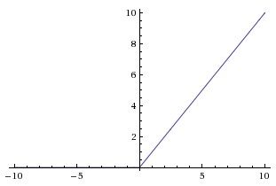

神经网络
在机器学习和认知科学领域，人工神经网络（artificial neural network，缩写ANN），简称神经网络（neural network，缩写NN），是一种模仿生物神经网络(动物的中枢神经系统，特别是大脑)的结构和功能的数学模型或计算模型，用于对函数进行估计或近似。神经网络由大量的人工神经元联结进行计算。大多数情况下人工神经网络能在外界信息的基础上改变内部结构，是一种自适应系统现代神经网络是一种非线性统计性数据建模工具。典型的神经网络具有以下三个部分：
- 结构 （Architecture）：结构指定了网络中的变量和它们的拓扑关系。例如，神经网络中的变量可以是神经元连接的权重（weights）和神经元的激励值（activities of the neurons）。
- 激励函数（Activity Rule）：大部分神经网络模型具有一个短时间尺度的动力学规则，来定义神经元如何根据其他神经元的活动来改变自己的激励值。一般激励函数依赖于网络中的权重（即该网络的参数）。
- 学习规则（Learning Rule）：学习规则指定了网络中的权重如何随着时间推进而调整。这一般被看做是一种长时间尺度的动力学规则。一般情况下，学习规则依赖于神经元的激励值。它也可能依赖于监督者提供的目标值和当前权重的值。
神经网络结构
神经网络被建模成神经元的集合，神经元之间以无环图的形式进行连接，也就是说，一些神经元的输出是另一些神经元的输入。在网络中是不允许循环的，这样的循环会导致前项传播的无限循环。通常神经网络中神经元是分层的，而不像生物神经元一样聚合成大小不一的聚合状，最常见的层的类型是全连接层（fully-connected layer）。全连接层中的神经元跟其前后两层的神经元是完全连接的，但是在同一层神经元之间是没有连接的。下图是一个3层神经网络。（不包括输入层）。

神经网络的常用激励函数
每个激活函数（或非线性函数）的输入都是一个数字，然后对其进行某种固定的数学操作。
sigmoid
sigmoid非线性激活函数的数学公式$\sigma(x) = \frac{1}{1+e^{-x}}$，正如在logistics regression中，它输入实数并将其映射到0到1的范围内。具体的说是很大的正数变成1，很大的负数变成0。

softmax
softmax函数又称为归一化指数函数，他将一个含任意实数的$k$维向量$z$映射到另外一个$k$维实向量$\sigma(z)$中，使得每一个元素的范围都在$(0,1)$之间，并且所有元素的和为1
$$
\begin{align}
\sigma(z)_j =& \frac {\exp (z_j)}{\sum^K_{k=1}exp(z_k)} \\
\\ j =& 1,2\cdots,K
\end{align}
$$$$
\begin{align}
h_\theta(x) =
\begin{bmatrix}
P(y = 1 | x; \theta) \\
P(y = 2 | x; \theta) \\
\vdots \\
P(y = K | x; \theta)
\end{bmatrix}
=
\frac{1}{ \sum_{j=1}^{K}{\exp(\theta^{(j)\top} x) }}
\begin{bmatrix}
\exp(\theta^{(1)\top} x ) \\
\exp(\theta^{(2)\top} x ) \\
\vdots \\
\exp(\theta^{(K)\top} x ) \\
\end{bmatrix}
\end{align}
$$$$
\theta = \left[\begin{array}{cccc}| & | & | & | \\
\theta^{(1)} & \theta^{(2)} & \cdots & \theta^{(K)} \\
| & | & | & |
\end{array}\right].
$$softmax函数实际上是有限项离散概率分布的梯度对数归一化。
Softmax Regression 有一个不寻常的特点：它有一个“冗余”的参数集。假设我们在$\theta^{(k)}$中减去$\psi$时，不影响原函数的预测结果。这表明前面的 softmax 回归模型中存在冗余的参数， Softmax 模型被过度参数化了
overparameterized。对于任意一个用于拟合数据的假设函数，可以求出多组参数值，这些参数得到的是完全相同的假设函数 $h_\theta(x)$。如下所示，
$$
\begin{split}
P(y^{(i)} = k | x^{(i)} ; \theta)
&= \frac{\exp((\theta^{(k)}-\psi)^\top x^{(i)})}{\sum_{j=1}^K \exp( (\theta^{(j)}-\psi)^\top x^{(i)})} \\
&= \frac{\exp(\theta^{(k)\top} x^{(i)}) \exp(-\psi^\top x^{(i)})}{\sum_{j=1}^K \exp(\theta^{(j)\top} x^{(i)}) \exp(-\psi^\top x^{(i)})} \\
&= \frac{\exp(\theta^{(k)\top} x^{(i)})}{\sum_{j=1}^K \exp(\theta^{(j)\top} x^{(i)})}.
\end{split}
$$Tanh
tanh非线性函数的图像如下图所示，它讲实数值压缩到[-1,1]之间。与sigmoid神经元不同的是，它的输出是零中心的，因此在实际的操作中，tanh非线性函数比sigmoid非线性函数更受欢迎。tanh函数是一个简单放大的sigmoid神经元，$tanh(x) = 2\sigma(2x) -1$。

ReLU ReLU函数的公式$f(x) = max (0,x)$，这个激活函数就是一个关于0的阈值，见下图。

- 优点：相较于sigmoid跟tanh函数，ReLU对于随机梯度下降的收敛有巨大的加速作用，sigmoid跟tanh神经元含有指数运算等耗费计算资源的操作，ReLU可以简单的通过对一个矩阵进行阈值计算得到。
- 缺点：ReLU单元在训练的时候有可能“死掉”。当一个很大的梯度流过ReLU的神经元的时候，可能会导致梯度更新后无法被其他任何数据点再次激活。从此所以流过这个神经元的梯度将都变成0。也就是说，这个ReLU单元在训练中将不可逆转的死亡，因为这导致了数据多样化的丢失。例如，如果学习率设置得太高，可能会发现网络中40%的神经元都会死掉（在整个训练集中这些神经元都不会被激活）。通过合理设置学习率，这种情况的发生概率会降低。
Leaky ReLU
Leaky ReLU是为了解决”ReLU死亡”问题的，ReLU中，$x<0$时，函数值为0， 而在Leaky ReLU中则是一个很小的负数梯度值，比如0.01。
Relationship of Logistic Rregression and Softmax Regression
当k = 2 时，Softmax Regression可以写为
$$
\begin{align}
h_\theta(x^{(i)}) &=
\frac{1}{ \exp(\theta^{(1)^{\top}}x^{(i)}) + \exp( \theta^{(2)^{\top}} x ^{(i)}) }
\begin{bmatrix}
\exp( \theta^{(1)^{\top}} x ^{(i)}) \\
\exp( \theta^{(2)^{\top}} x ^{(i)})
\end{bmatrix}
\end{align}
$$
我们令$\psi = \theta^{(1)}$ 并且在两个参数向量中都减去向量$\theta^{(1)}$，得到
$$
\begin{split}
h_\theta(x^{(i)}) &=
\frac{1}{ \exp(\vec{0}^{\top}x^{(i)}) + \exp(( {\theta^{(2)}-\theta^{(1)}})^{\top} x ^{(i)})}
\begin{bmatrix}
\exp( \vec{0}^{\top} x^{(i)} ) \\
\exp( ( {\theta^{(2)}-\theta^{(1)}})^{\top} x^{(i)} )
\end{bmatrix}\\
\\&=
\begin{bmatrix}
\frac{1}{ 1 + \exp( ( {\theta^{(2)}-\theta^{(1)}})^{\top} x^{(i)} ) } \\
\frac{\exp( ( {\theta^{(2)}-\theta^{(1)}})^{\top} x^{(i)} )}{ 1 + \exp( ( {\theta^{(2)}-\theta^{(1)}})^{\top} x ^{(i)}) }
\end{bmatrix} \\
\\&=
\begin{bmatrix}
\frac{1}{ 1 + \exp( ( {\theta^{(2)}-\theta^{(1)}})^{\top} x^{(i)} ) } \\
1 - \frac{1}{ 1 +\exp( ( {\theta^{(2)}-\theta^{(1)}})^{\top} x^{(i)} ) } \\
\end{bmatrix}
\end{split}
$$
用$\theta^{‘}$表示$\theta^{(1)}-\theta^{(2)}$，我们会发现Softmax Regression 预测其中的一个类别的概率为$\frac{1}{ 1 + \exp(- (\theta’)^\top x^{(i)} ) }$ ，另一个类别的概率为$1-\frac{1}{ 1 + \exp(- (\theta’)^\top x^{(i)} ) }$，这就是Logistics Regression 。
Loss Function
logistic regression loss function
$$
J(\theta) = -\frac{1}{m} \sum_{i=1}^m y^{(i)}\log(h_\theta(x^{(i)}) ) +(1-y^{(i)})\log(1-h_\theta(x^{(i)}))
$$
neural network loss function
神经网络模型的代价函数取决于输出层是什么，对于不同的场景需要，对应于不同的代价函数。例如，在Autoencoder网络中，输出层等于输入层，此时采用均方误差（MSE）函数作为loss函数；在分类问题中，如果输出层采用Softmax回归进行分类，则可以直接采用Softmax回归的loss函数作为整个神经网络的代价函数。如果输出层采用Logistic regression进行分类，那么输出层其实就是K个Logistic regression，整个网络的代价函数就是这K个Logistic regression模型代价函数的加和。
输出层采用Logistic Regression
$$
J(\Theta) = -\frac{1}{m}\Bigg[\sum_{i=1}^m\sum_{k=1}^Ky_k^{(i)} \log(h_\Theta(x^{(i)}))_k + (1- y_k^{(i)})\log(1-(h_\Theta(x^{(i)}))_k) \Bigg]
$$输出层采用 Softmax Regression
$$
\begin{align}
J(\theta) = - \frac{1}{m}\left[ \sum_{i=1}^{m} \sum_{k=1}^{K} \mathbb 1 \left\{y^{(i)} = k\right\} \log \frac{\exp(\theta^{(k)\top} x^{(i)})}{\sum_{j=1}^K \exp(\theta^{(j)\top} x^{(i)})}\right]
\end{align}
$$$$
\begin{align}
\nabla_{\theta^{(k)}} J(\theta) = - \frac{1}{m}\sum_{i=1}^{m}{ \left[ x^{(i)} \left( \mathbb 1\{ y^{(i)} = k\} - P(y^{(i)} = k | x^{(i)}; \theta) \right) \right] }
\end{align}
$$$$
P(y^{(i)} = k | x^{(i)} ; \theta) = \frac{\exp(\theta^{(k)\top} x^{(i)})}{\sum_{j=1}^K \exp(\theta^{(j)\top} x^{(i)}) }
$$
对比Logistics Regression 跟 Softmax Regression，在Logistics Regression 中
$$
P(y^{(i)} = k | x^{(i)} ; \theta) = y_k^{(i)} \log(h_\Theta(x^{(i)}))_k + (1- y_k^{(i)})\log(1-(h_\Theta(x^{(i)}))_k
$$
在Softmax Regression中，$P(y^{(i)} = k | x^{(i)} ; \theta) = \frac{\exp(\theta^{(k)\top} x^{(i)})}{\sum_{j=1}^K \exp(\theta^{(j)\top} x^{(i)}) }$，因此Logtistic Regression 也可以写为以下的形式：
$$
\begin{align}
J(\theta) &= - \left[ \sum_{i=1}^m (1-y^{(i)}) \log (1-h_\theta(x^{(i)})) + y^{(i)} \log h_\theta(x^{(i)}) \right] \\
&= - \left[ \sum_{i=1}^{m} \sum_{k=0}^{1} \mathbb 1\left\{y^{(i)} = k\right\} \log P(y^{(i)} = k | x^{(i)} ; \theta) \right]
\end{align}
$$
Loss Function Regularization
logistic regression loss function regularization
$$
J(\theta) = -\frac{1}{m} \sum_{i=1}^m y^{(i)}\log(h_\theta(x^{(i)}) ) +(1-y^{(i)})\log(1-h_\theta(x^{(i)})) + \frac{\lambda}{2m} \sum_{j=1}^n \theta_j^2
$$
neural network loss function regularization
输出层采用Logistic Regression
$$
J(\Theta) = -\frac{1}{m}\Bigg[\sum_{i=1}^m\sum_{k=1}^Ky_k^{(i)} \log(h_\Theta(x^{(i)}))_k + (1- y_k^{(i)})\log(1-(h_\Theta(x^{(i)}))_k)\Bigg] + \frac{\lambda}{2m} \sum_{l=1}^{L-1}\sum_{i=1}^{s_l}\sum_{j=1}^{s_{l+1}}(\Theta_{ji}^{(l)})^2
$$输出层采用 Softmax Regression
$$
J(\theta) = -\left [ \sum_{i=1}^{m} \sum_{k=1}^{K} \mathbb 1\left\{y^{(i)} = k\right\} \log \frac{\exp(\theta^{(k)\top} x^{(i)})}{\sum_{j=1}^K \exp(\theta^{(j)\top}x^{(i)})}\right]+\frac{\lambda}{2}\sum^K_{k=1}\sum^n_{j=1}\theta^2_{kj}
$$$$
\nabla_{\theta^{(k)}} J(\theta) = - \frac{1}{m} \sum_{i=1}^{m}{ \left[ x^{(i)} \left( \mathbb1\{ y^{(i)} = k\} - P(y^{(i)} = k | x^{(i)}; \theta) \right) \right] } + \lambda\theta^{(k)}
$$
Feed forward and Back propagation
下面我们用输出层采样为Logistics Regression 为例子来说明
一些标记:
- L 表示神经网络的总层数
- $S_l$表示第$l$层神经网络unit个数，不包括偏差单元
bias unit - k表示第几个输出单元
- $\Theta^{(l)}_{i,j}$ 第$l$层到第$l+1$层的权值矩阵的第$i$行第$j$列的分量
- $Z^{(j)}_i$ 第$j$层第$i$个神经元的输入值
- $a^{(j)}_i$第$j$层第$i$个神经元的输出值
- $a^{(j)} = g(Z^{(j)})$
Feed forward
|
|
$$
J(\Theta) = -\frac{1}{m}\Bigg[\sum_{i=1}^m\sum_{k=1}^Ky_k^{(i)} \log(h_\Theta(x^{(i)}))_k + (1- y_k^{(i)})\log(1-(h_\Theta(x^{(i)}))_k) \Bigg]
$$
|
|
Chain Rule
$y = g(x)\quad z = h(y)$
$\Delta x \rightarrow \Delta y \rightarrow \Delta z \quad \frac{dz}{dx} = \frac{dz}{dy} \frac{dy}{dx}$
$x = g(s) \quad y = h(s) \quad z = k(x,y)$
$\Delta s \rightarrow \Delta x \rightarrow \Delta z \quad \Delta s \rightarrow \Delta y \rightarrow \Delta z$
$\frac{dz}{ds} = \frac{\partial z}{\partial x} \frac{dx}{ds} + \frac{\partial z }{\partial y} \frac{dy}{ds}$
Back Propagation
我们知道代价函数loss function后，下一步就是按照梯度下降法来计算$\theta$求解loss function的最优解。使用梯度下降法首先要求出梯度，即偏导项$\frac{\partial}{\partial \Theta^{(l)} _{ij}} J(\Theta)$，计算偏导项的过程我们称为back propagation。
根据上面的feed forward computation 我们已经计算得到了 $a^{(1)}$ ，$a^{(2)}$， $a^{(3)}$ ，$Z^{(2)}$，$Z^{(3)}$。
hidden layer to output layer
$$
h_\Theta(x) = a^{(L)} = g(z^{(L)})
$$
$$
z^{(l)} = \Theta^{(l-1)}a^{(l-1)}
$$
$$
\frac{\partial}{\partial \Theta^{(L-1)}_{i,j}}J(\Theta) = \frac {\partial J(\Theta)}{\partial h_\theta(x)_i} \frac{\partial h_\theta(x)_i}{\partial z^{(L)}_i} \frac{\partial z^{(L)}_i}{\partial \Theta^{(L-1)}_{i,j}} = \frac {\partial J(\Theta)}{\partial a^{(L)}_i}\frac{\partial a^{(L)}_i}{\partial z^{(L)}_i} \frac{\partial z^{(L)}_i}{\partial \Theta^{(L-1)}_{i,j}}
$$
$$
loss(\Theta) =- y^{(i)}\log(h_\Theta(x^{(i)}) ) -(1-y^{(i)})\log(1-h_\Theta(x^{(i)}))
$$
$$
\frac{\partial J(\Theta)}{\partial a^{(L)}_i} =\frac{a^{(L)}_i -y_i}{(1-a^{(L)}_i)a^{(L)}_i}
$$
由下式得
$$
\begin{split}
\frac{\partial g(z)}{\partial z} & = -\left( \frac{1}{1 + e^{-z}} \right)^2\frac{\partial{}}{\partial{z}} \left(1 + e^{-z} \right) \\
\\ & = -\left( \frac{1}{1 + e^{-z}} \right)^2e^{-z}\left(-1\right) \\
\\ & = \left( \frac{1}{1 + e^{-z}} \right) \left( \frac{1}{1 + e^{-z}} \right)\left(e^{-z}\right) \\
\\ & = \left( \frac{1}{1 + e^{-z}} \right) \left( \frac{e^{-z}}{1 + e^{-z}} \right) \\
\\ & = \left( \frac{1}{1+e^{-z}}\right)\left( \frac{1+e^{-z}}{1+e^{-z}}-\frac{1}{1+e^{-z}}\right) \\
\\ & = g(z) \left( 1 - g(z)\right) \\
\\ \end{split}
$$
$$
\frac{\partial a^{(L)}_i}{\partial z^{(L)}_i} = \frac{\partial g(z^{(L)}_i)}{\partial z^{(L)}_i} = g(z^{(L)}_i)(1- g(z^{(L)}_i))=a^{(L)}_i(1- a^{(L)}_i)
$$
$$
\frac{\partial z^{(L)}_i}{\partial \Theta^{(L-1)}_{i,j}} = a^{(L-1)}_j
$$
综上
$$
\begin{split}
\\ \frac{\partial}{\partial \Theta^{(L-1)}_{i,j}}J(\Theta) &= \frac {\partial J(\Theta)}{\partial a^{(L)}_i}\frac{\partial a^{(L)}_i}{\partial z^{(L)}_i} \frac{\partial z^{(L)}_i}{\partial \Theta^{(L-1)}_{i,j}} \\
\\ &=\frac{a^{(L)}_i -y_i}{(1-a^{(L)}_i)a^{(L)}_i} a^{(L)}_i(1- a^{(L)}_i) a^{(L-1)}_j \\
\\ &= (a^{(L)}_i - y_i) a_j^{(L-1)}
\end{split}
$$
hidden layer / input layer to hidden layer
因为$a^{(1)} = x$，所以可以将 input layer 与 hidden layer同样对待
$$
\frac{\partial}{\partial \Theta^{(l-1)}_{i,j}}J(\Theta) = \frac {\partial J(\Theta)}{\partial a^{(l)}_i} \frac{\partial a^{(l)}_i}{\partial z^{(l)}_i}\frac{\partial z^{(l)}_i}{\partial \Theta^{(l-1)}_{i,j}} \ (l = 2,3, …, L-1)
$$
$$
\frac{\partial a^{(l)}_i}{\partial z^{(l)}_i} =
\frac{\partial g(z^{(l)}_i)}{\partial z^{(l)}_i} =
g(z^{(l)}_i)(1- g(z^{(l)}_i))=
a^{(l)}_i(1- a^{(l)}_i)
$$
$$
\frac{\partial z^{(l)}_i}{\partial \Theta^{(l-1)}_{i,j}} = a^{(l-1)}_j
$$
第一部分的偏导比较麻烦，要使用chain rule。
$$
\dfrac{\partial J(\Theta)}{\partial a_i^{(l)}}
= \sum_{k=1}^{s_{l+1}} \Bigg[\dfrac{\partial J(\Theta)}{\partial a_k^{(l+1)}} \dfrac{\partial a_k^{(l+1)}}{\partial z_k^{(l+1)}} \dfrac{\partial z_k^{(l+1)}}{\partial a_i^{(l)}}\Bigg]
$$
$$
\frac{\partial a^{(l+1)}_k}{\partial z^{(l+1)}_k} = a^{(l+1)}_k (1 - a^{(l+1)}_k)
$$
$$
\frac{\partial z^{(l+1)}_k}{\partial a^{(l)}_i} = \Theta^{(l)}_{k,i}
$$
求得递推式为：
$$
\begin{split}
\\ \frac{\partial J(\Theta)}{\partial a^{(l)}_i} &=
\sum_{k=1}^{s_{l+1}} \Bigg[\dfrac{\partial J(\Theta)}{\partial a_k^{(l+1)}} \dfrac{\partial a_k^{(l+1)}}{\partial z_k^{(l+1)}} \dfrac{\partial z_k^{(l+1)}}{\partial a_i^{(l)}}\Bigg]\\
\\ &= \sum_{k=1}^{s_{l+1}} \Bigg[\frac{\partial J(\Theta)}{\partial a^{(l+1)}_k}
\frac{\partial a^{(l+1)}_k}{\partial z^{(l+1)}_k} \Theta^{(l)}_{k,i} \Bigg] \\
\\ &= \sum_{k=1}^{s_{l+1}} \Bigg[ \frac{\partial J(\Theta)}{\partial a^{(l+1)}_k}
a^{(l+1)}_k (1 - a^{(l+1)}_k) \Theta^{(l)}_{k,i} \Bigg]
\end{split}
$$
定义第$l$层第$i$个节点的误差为：
$$
\begin{split}
\delta^{(l)}_i &= \frac{\partial}{\partial z^{(l)}_i} J(\Theta)
\\&= \frac{\partial J(\Theta)}{\partial a^{(l)}_i} \frac{\partial a^{(l)}_i}{\partial z^{(l)}_i} \\
\\ &=\frac{\partial J(\Theta)}{\partial a^{(l)}_i} a^{(l)}_i (1 - a^{(l)}_i) \\
\\ &= \sum_{k=1}^{s_{l+1}} \Bigg[\frac{\partial J(\Theta)}{\partial a^{(l+1)}_k}
\frac{\partial a^{(l+1)}_k}{\partial z^{(l+1)}_k} \Theta^{(l)}_{k,i} \Bigg] a^{(l)}_i (1 - a^{(l)}_i) \\
\\ &= \sum_{k=1}^{s_{l+1}} \Bigg[\delta^{(l+1)}_k \Theta^{(l)}_{k,i} \Bigg] a^{(l)}_i (1 - a^{(l)}_i) \
\end{split}
$$
$$
\begin{split}
\delta^{(L)}_i &= \frac{\partial J(\Theta)}{\partial z^{(L)}_i} \\
\\ &= \frac {\partial J(\Theta)}{\partial a^{(L)}_i} \frac{\partial a^{(L)}_i}{\partial z^{(L)}_i} \\
\\ &=\frac{a^{(L)}_i -y_i}{(1-a^{(L)}_i)a^{(L)}_i} a^{(L)}_i(1- a^{(L)}_i) \\
\\ &= a^{(L)}_i - y_i
\end{split}
$$
最终代价函数的偏导数为
$$
\begin{split}
\frac {\partial}{\partial \Theta^{(l-1)}_{i,j}} J(\Theta) &= \frac {\partial J(\Theta)}{\partial a^{(l)}_i}\frac{\partial a^{(l)}_i}{\partial z^{(l)}_i} \frac{\partial z^{(l)}_i}{\partial \Theta^{(l-1)}_{i,j}} \\
\\&= \frac {\partial J(\Theta)}{\partial z^{(l)}_i} \frac{\partial z^{(l)}_i}{\partial \Theta^{(l-1)}_{i,j}} \\
\\ &= \delta^{(l)}_i \frac{\partial z^{(l)}_i}{\partial \Theta^{(l-1)}_{i,j}} \\
\\ &= \delta^{(l)}_i a^{(l-1)}_j
\end{split}
$$
总结
输出层的误差 $\delta^{(L)}_i$
$$
\delta^{(L)}_i = a^{(L)}_i - y_i
$$隐层误差 $\delta^{(l)}_i$
$$
\delta^{(l)}_i =\sum_{k=1}^{s_{l+1}} \Bigg[\delta^{(l+1)}_k \Theta^{(l)}_{k,i} \Bigg] a^{(l)}_i (1 - a^{(l)}_i)
$$代价函数偏导项 $\frac {\partial}{\partial \Theta^{(l-1)}_{i,j}} J(\Theta)$
$$
\frac {\partial}{\partial \Theta^{(l-1)}_{i,j}} J(\Theta) = \delta^{(l)}_i a^{(l-1)}_j
$$
即
$$
\frac {\partial}{\partial \Theta^{(l)}_{i,j}} J(\Theta) = \delta^{(l+1)}_i a^{(l)}_j
$$
让我们重新整下back propagation的过程。
首先，我们定义每层的误差
$$
\delta^{(l)} = \frac {\partial}{ \partial z^{(l)}} J(\Theta)
$$
$\delta^{(l)}_j$ 表示第$l$层第$j$个节点的误差。为了求出偏导项$\frac{\partial}{\partial \Theta^{(l)} _{ij}} J(\Theta)$，我们首先要求出每一层的$\delta$（不包括第一层，第一层是输入层，不存在误差），对于输出层第四层
$$
\begin{align}
\delta_i^{(4)} & = \frac{\partial}{\partial z_i^{(4)}}J(\Theta) \\
\\& = \frac{\partial J(\Theta)}{\partial a_i^{(4)}}\frac{\partial a_i^{(4)}}{\partial z_i^{(4)}} \\
\\& = -\frac{\partial}{\partial a_i^{(4)}}\sum_{k=1}^K\left[y_kloga_k^{(4)}+(1-y_k)log(1-a_k^{(4)})\right]g’(z_i^{(4)}) \\
\\& = -\frac{\partial}{\partial a_i^{(4)}}\left[y_iloga_i^{(4)}+(1-y_i)log(1-a_i^{(4)})\right]g(z_i^{(4)})(1-g(z_i^{(4)})) \\
\\ & = \left(\frac{1-y_i}{1-a_i^{(4)}}-\frac{y_i}{a_i^{(4)}}\right)a_i^{(4)}(1-a_i^{(4)}) \\
\\ & = (1-y_i)a_i^{(4)} - y_i(1-a_i^{(4)}) \\
\\ & = a_i^{(4)} - y_i \\
\end{align}
$$
$$
\begin{split}
\delta_i^{(l)} & = \frac{\partial}{\partial z_i^{(l)}}J(\Theta) \\
\\ & = \sum_{k=1}^{S_{l+1}}\frac{\partial J(\Theta)}{\partial z_k^{(l+1)}}\frac{\partial z_k^{(l+1)}}{\partial a_i^{(l)}}\frac{\partial a_i^{(l)}}{\partial z_i^{(l)}} \\
\\ & = \sum_{k=1}^{S_{l+1}}\delta_k^{(l+1)}\Theta_{ki}^{(l)} g’(z_i^{(l)}) \\
\\ & = g’(z_i^{(l)})\sum_{k=1}^{S_{l+1}}\delta_k^{(l+1)}\Theta_{ki}^{(l)}
\end{split}
$$
写成向量的形式：
$$
\delta^{(l)} = (\Theta^{(l)})^T\delta^{(l+1)} \ldotp\ast g’(z^{(l)})
$$
求出所有的$\delta$后，我们可以得到
$$
\frac {\partial}{\partial \Theta ^{(l)}_{i,j}} J(\Theta) = \delta^{(l+1)}_i a^{(l)}_j
$$
|
|